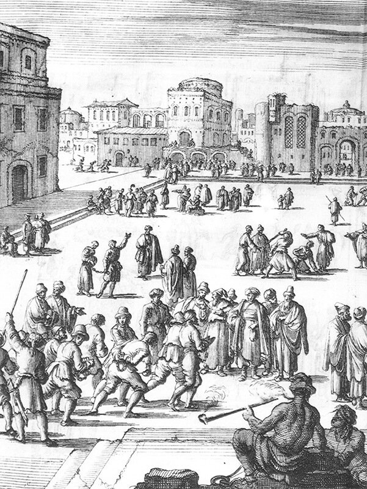

Рабы на галеры в XVII веке поступали тремя основными путями:
- покупка на невольничьих рынках;
- обмен;
- захват в ходе боевых действий.
Обсудим сначала первый из этих путей. Торговля рабами в рассматриваемый нами период была не спорадическим явлением, но четко отлаженным непрерывным процессом со всеми необходимыми атрибутами. Главными первичными центрами торговли являлись Ливорно, Мальта и Милос, хотя наряду с ними было множество мелких невольничьих рынков и торговцев-оптовиков, которые не привязывались к определенному месту, а также площадок для, так сказать, «second hand-торговли», к которым относились, в частности, Марсель, Тулон и др.

Торговцев, занимающихся работорговлей, можно было найти во многих портах Средиземноморья, больших и малых. Но не все невольничьи рынки в этом регионе были открыты для французов и не было ни одного более или менее важного рынка, где французский флот имел бы монопольное право, за исключением, конечно, Марселя. Покупая рабов за границей, французы сталкивались с конкурентами. На рынках в неаполитанских, сицилийских, сардинских портах и в портах Майорки обычно доминировали испанцы. Конкурентами являлись также такие правители, как Папа и герцог Тосканский, оба имевшие в своем распоряжении галеры. В некоторых портах французы должны были платить тарифы на экспорт рабов. В действительности, было только два крупных рынка, где французские закупки рабов были стабильными: Мальта и свободный порт Ливорно, причем первый постепенно становился все менее важным для французов по некоторым причинам, о которых будет сказано ниже.
Невольничий рынок в Ливорно известен со второй половины XVI века, после того, как Козимо Медичи основал в Тоскане орден св. Этьена, Великим Магистром которого стал сам лично, и создал флот для отражения атак корсаров и ведения боевых действий против османских военных кораблей. 12 галер из состава флота ордена св. Этьена принимали участие в сражении при Лепанто. Создание флота потребовало большого числа гребцов, для комплектования которых и был создан в Ливорно невольничий рынок. В последующем, в результате захвата тосканцами турецких галер, рынок стал насыщаться новыми рабами и превратился в крупнейшего поставщика гребцов на галеры для всего Средиземноморья. Постепенно он стал «нейтральным» рынком, на котором действовали как работорговцы-христиане, так и продавцы живого товара из мусульманских стран, в частности, из Северной Африки. Рабы-христиане и рабы-мусульмане находились здесь рядом друг с другом.
Рынок на острове Милос, родине Венеры Милосской, не был так знаменит и деятельность его была ограничена во времени. Расцвет милосского невольничьего рынка приходится на период захвата островов Архипелага венецианцами в 1685-1687 годах. Венеция, также как и Тоскана, пыталась сохранить нейтралитет в войне между христианами и мусульманами. В последующем торговля на рынке заглохла, так как военная ситуация на островах Архипелага была очень неустойчивой.
Мальта занимает в этом списке особое место. Король Франции содержал в Ла-Валетте специальное представительство, имеющее целью закупку рабов для шиурмы. Подпитываемый действиями галер ордена св.Иоанна и корсаров, рынок процветал в течение долгого времени, вплоть до начала XIX века. Наполеон, захватив мальтийскую крепость в 1798 году, еще нашел там 2000 невольников-мусульман, которым он даровал свободу.
Рыцари Мальты почти всегда имели в наличии «неверных», которые могли быть проданы как имущество Ордена. Но так как многие из рабов были собственностью самого Ордена и находились в общем резерве живой силы при подготове очередной кампании, спрос на рабов на мальтийском рынке зачастую превышал предложение. Борьба за Крит, имеющаяя серьезные последствия, также негативно влияла на мальтийский рынок. До 1645 г. Крит служил важной базой для каперства, обеспечивающей и снабжение, и ремонт кораблей, и реализацию пленных, захваченных в центральном и восточном Средиземноморье. Расположенной в центре оттоманских владений, вблизи от морских путей между Александрией и Константинополем, Крит в течение долгого времени был бельмом на глазу у турок, как ранее был Родос, и все еще была сама Мальта. Потеря Крита как базы для операций в 1669 году серьезно ограничила все христианское каперство в восточном Средиземноморье, особенно то, которое проводилось судами и галерами с Мальты, что привело к снижению работорговли Ордена. С тех пор, учитывая также натянутые отношения Людовика с Великим Магистром и папой, Орден едва ли желал вообще продавать рабов Людовику XIV. Но, конечно, Орден не мог открыто отказать Франции в продаже рабов, учитывая широкое распространение привилегий и собственности иоаннитов внутри владений Людовика. Самое большее, на что иоанниты могли пойти, это сокрашение продаж и введение экспортных пошлин на отгрузку рабов.
Кольбер был разгневан таксой в 55 ливров за голову, наложенной на рабов, экспортируемых с Мальты во Францию в 1671 году; французскому консулу было велено добиваться полного освобождения от этого сбора. В начале семидесятых французские консулы на Мальте докладывали, что они заключили контракты с Мальтийскими и Савойскими капитанами, которые обещали поставлять рабов различного сорта. Любопытно, что как раз после того, как переговоры Людовика о возобновлении соглашения с Портой начали приносить плоды, интенданту Арнулю было доложено, что мальтийские рыцари «только что» захватили около 1200 пленных в столкновении с турками; Арнуль ответил, что по его мнению эти рабы могут представить «прекрасный шанс усилить гребную силу короля.»
Конечно, покупкой этих рабов Людовик мог повредить выработке соглашения с Портой. Но он все-таки хотел купить рабов приемлемого качества. Чтобы подтолкнуть своих консулов на Мальте, которые были рыцарями Ордена, к более активной работе по приобретению рабов, Людовик обещал вознаградить их капитанством на галере, при условии поставки 200 рабов. Такие уловки были необходимы для того, чтобы стимулировать необходимое рвение и лояльность на королевской службе, так как рыцари встречали мощное противодействие внутри собственного Ордена попыткам купить рабов для Франции. Два рыцаря, работающие в качестве консулов, поставили достаточно рабов, чтобы получить звание капитана: шевалье де Пианкур и Тэнкур. Однако, каждый из них потратил много лет, чтобы выполнить свою квоту, и морской министр высказал свое сомнение в их усердии. Следующий консул, д’Эскревиль, был исключительно слабый покупатель, намного менее успешный из всех троих. За период в пятнадцать лет он едва собрал 200 человек, причем многих из них пришлось отвергнуть как не отвечающих требованиям и вернуть на Мальту.
Лучше обстояли дела у консулов Людовика в Ливорно. Но об этом поговорим в следующий раз.